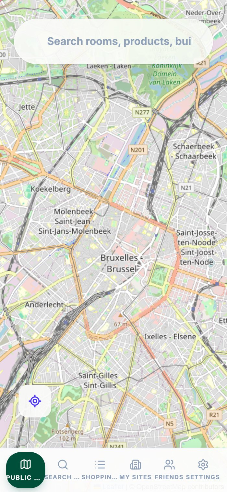

Локальний пошук товарів і місць
Головна точка входу в StartToFind. Покупці шукають товари, магазини, послуги, приміщення чи категорії й отримують реальні результати на мапі — з актуальною кількістю, рекламними розміщеннями від місцевих магазинів та активністю друзів, а не з типовим вебкаталогом.
- Пошук одночасно в усіх місцевих магазинах-учасниках
- Рекламні розміщення — рекламний рівень, що фінансує безкоштовну основу
- Можливість знайти невеликі чи унікальні магазини, які інакше загубилися б за великими платформами
Усі магазини, будівлі й кампуси
Окрім пошуку товарів, покупці можуть переглядати сам каталог локацій із фільтрами за тим, що для них справді важливо, а не лише за ціною.
- Фільтри за місцевим походженням, доступністю, веганськими товарами або «спершу найдешевші»
- Перегляд за будівлею, кампусом чи окремим магазином
- Відстань і ціна одразу на кожній картці
Картографування приміщень і прокладання маршрутів
Шар мапи, що об’єднує все разом — від пошуку в межах міста до рівня кампусу та окремої будівлі. Маршрути, зручні для крісел колісних, дитячих візочків і доставки, — частина того самого механізму.
- На основі OpenStreetMap, кожна нанесена на мапу локація позначається автоматично
- Маршрути до приміщень, полиць, відділів, входів і виходів
- Виправлення від спільноти та перевірені бізнесом правки підтримують точність мап

Автоматичне створення графа
Детерміновані легкі алгоритми перетворюють завантажений поверховий план на граф, готовий до прокладання маршрутів: приміщення, проходи, двері та з’єднання, які можна редагувати й виправляти просто в браузері. Для першої версії не потрібні ні дорогі датчики, ні важке навчання ШІ.
- Низька вартість для кожної локації — саме це робить безкоштовне підключення можливим
- Швидке підключення з довгостроковою метою створювати мапу за лічені хвилини
Списки покупок, режим покупок і каса самообслуговування
Складіть список ще до візиту — і він перетвориться на живий маршрут магазином із синхронізованим чеклістом, персональними пропозиціями поблизу та контролем бюджету, аж до робочої оплати через самосканування.
- Повний маршрут StartToFind із поточним місцезнаходженням і синхронізованим списком, де можна відмічати товари
- Персоналізована «реклама поблизу» з урахуванням місцезнаходження під час покупок
- StartToFind Checkout з оплатою гаманцем або карткою — наразі робочий прототип, готовий до підключення справжнього платіжного провайдера
Безкоштовні цифрові вітрини для МСБ
Кожен бізнес-учасник отримує покрокову панель налаштування: будівля й планування, товари й акції, сканування й упорядкування, інформація про магазин. Легка альтернатива дорогій інфраструктурі електронної комерції.
- Покроковий чекліст налаштування, технічні навички не потрібні
- Керування всіма будівлями, поверховими планами й каталогами товарів в одному місці
- Саме тут магазини пілоту вносять свої товари з нашою допомогою на старті, або ми робимо це за них на місці

Зрозуміла прогнозна модель

Рекламне місце за наміром покупця
Прогнозна реклама та інтерес покупців
Це механізм, що стоїть за 200% рекламного кредиту й 3 роками безкоштовної аналітики в пілоті з внесенням товарів нами: зрозуміла модель, яка оцінює ймовірність покупки на основі реальних сигналів, ніколи не називаючи окремих покупців, — лише агреговані показники, за якими магазин може планувати й таргетувати рекламу.
Вона також показує, де покупці затримуються, де зупиняються й чекають, які проходи зазвичай оминають і які місця найкращі для заходів із підвищення видимості. Ми аналізуємо взаємозв’язки в усьому каталозі товарів, щоб побачити, що купують разом, — і магазин може перетворити ці закономірності на кращі розміщення, набори та плани дій.
- Лише агреговане прогнозне оцінювання з повагою до приватності
- Показує, де саме реклама може збільшити виручку — товар за товаром
- Виявляє зони затримки, оминуті проходи та найцінніші поєднання товарів
- Таргетинг за ймовірністю покупки, близькістю, інтересом до схожих товарів або історією покупок в інших магазинах

Аналітика локації та відповідність вимогам доступності
Кожна нанесена на мапу локація водночас стає аудитом доступності: система позначає приміщення, недосяжні для людей з обмеженою мобільністю, та оцінює загальну зв’язність будівлі й цілісність графа.
- Мапа зв’язності з виділеними доступними та недоступними ділянками
- Статус досяжності для кожного приміщення — корисно для звітності щодо відповідності вимогам
- Показники ефективності мережі: середня зв’язність, навантаження на переходи між поверхами, цілісність графа

Працює всюди
Той самий застосунок і ті самі дані, адаптовані аж до екрана телефона, адже більшість локальних пошуків «перед виходом з дому» відбувається на мобільному.
- Адаптивний інтерфейс — щоб спробувати, окремий мобільний застосунок не потрібен
- Нижня панель вкладок на малих екранах
- Ті самі актуальні дані, що й у версії для комп’ютера, без окремого мобільного набору даних